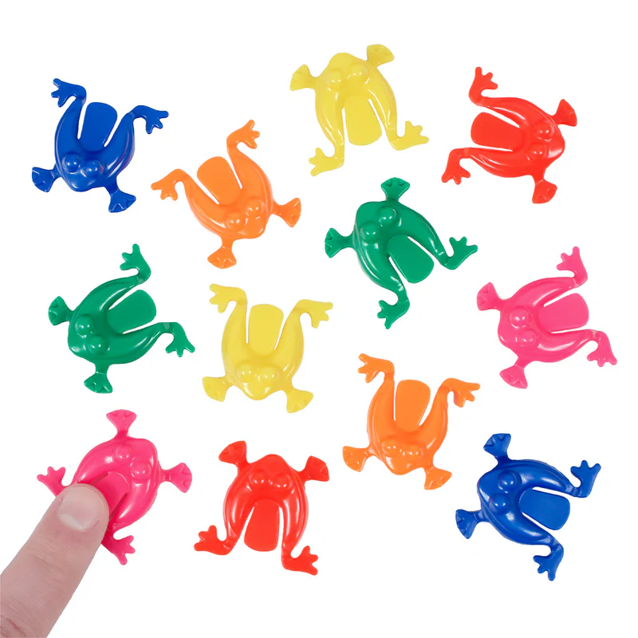
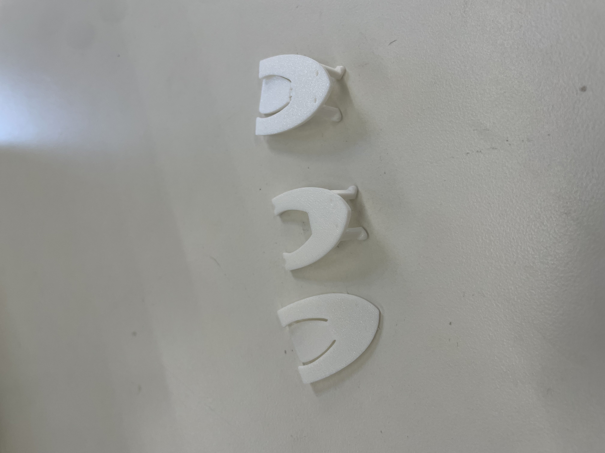
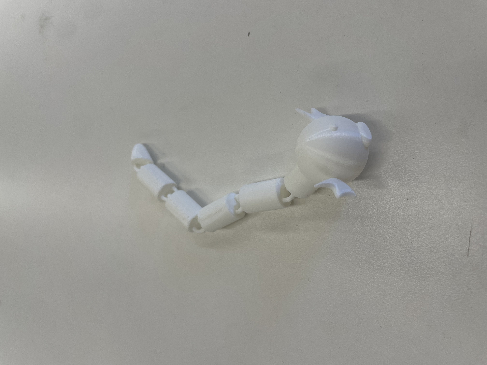
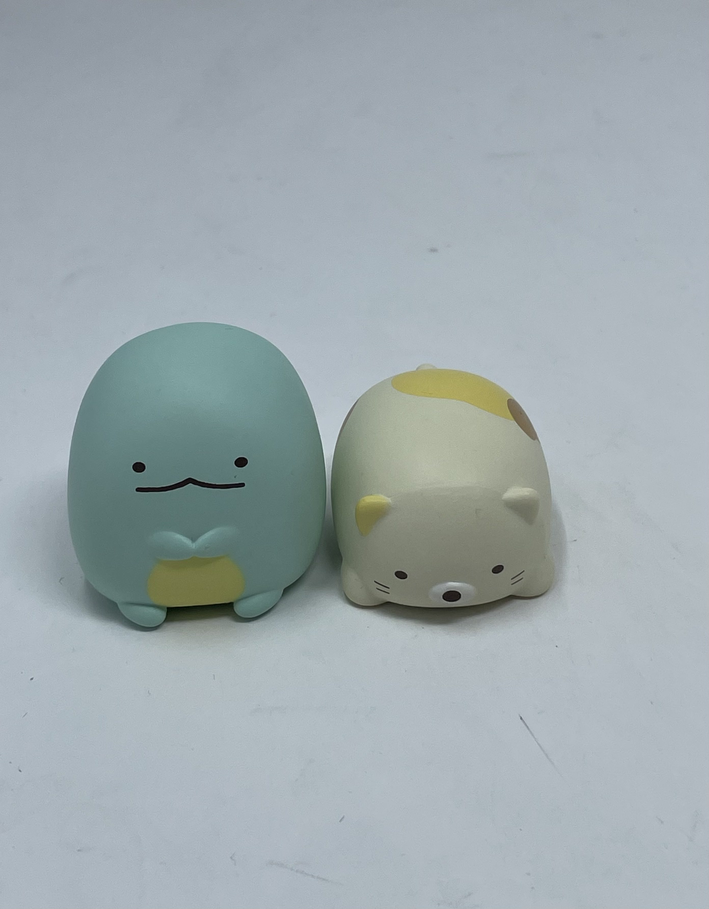

<div class="textcontainer">
<p class="margin"> </p>
<h3>Week 5: 3D Design & Printing</h3>
<h4>Assignment: Model and 3D print something</h4>
<p>This week, were assigned to model and 3D print something. My original idea was to print out little jumping frogs, like these: </p>

<p>After modeling my design on Fusion, I printed my first iteration. Ultimately, the legs were too thin and would break off while
I tried to remove the support material. Additionally, the tab used to push down would not bend as needed.
</p>
<p>I ended up going through a few iterations before I switched ideas. After these iterations, I realized PLA is probably not
the best material for this design. If I really had to try to make it work though, I would probably scale the design up
more and attempt to design a better hinge that can bend and (hopefully) generate the kinetic energy needed to make the frog
jump.
</p>
<model-viewer src="frog.glb"
alt="Fusion 360 model"
camera-controls
auto-rotate
style="width: 600px; height: 400px;">
</model-viewer>
<a download href='./frog.stl'> Frog STL </a>
<p class="margin"> </p>

<p> I went through a couple of iterations varying the thickness of the legs and body of the frog.</p>
<p>Impulsive pivot: </p>
<p>Eventually, I decided to pivot to attempt to make an articulate design. I was interested in designing something that had
some movment capability. I landed on making a chain-link PIP dratini.
</p>

<p> This model turned out to be more of a proof-of-concept. The CADing can definitely be improved on and some
paint would certainly help! I would like to look into better using t-splines as well to get more organic
shapes for the design. The model does articulate though!
</p>
<a download href='./dratini.stl'> Dratini STL </a>
<p class="margin"> </p>
<h4>3D Scan</h4>
<model-viewer src="shyla_cat_scan.glb"
camera-controls
auto-rotate
style="width: 500px; height: 400px;">
</model-viewer>
<a download href='./shyla_cat_scan.stl'> Cat Figure STL </a>
<model-viewer src="shyla_dinosaur_scan.glb"
camera-controls
auto-rotate
style="width: 500px; height: 400px;">
</model-viewer>
<a download href='./shyla_dinosaur_scan.stl'> Dinosaur Figure STL </a>
<p> Original Figures: </p>

</div>